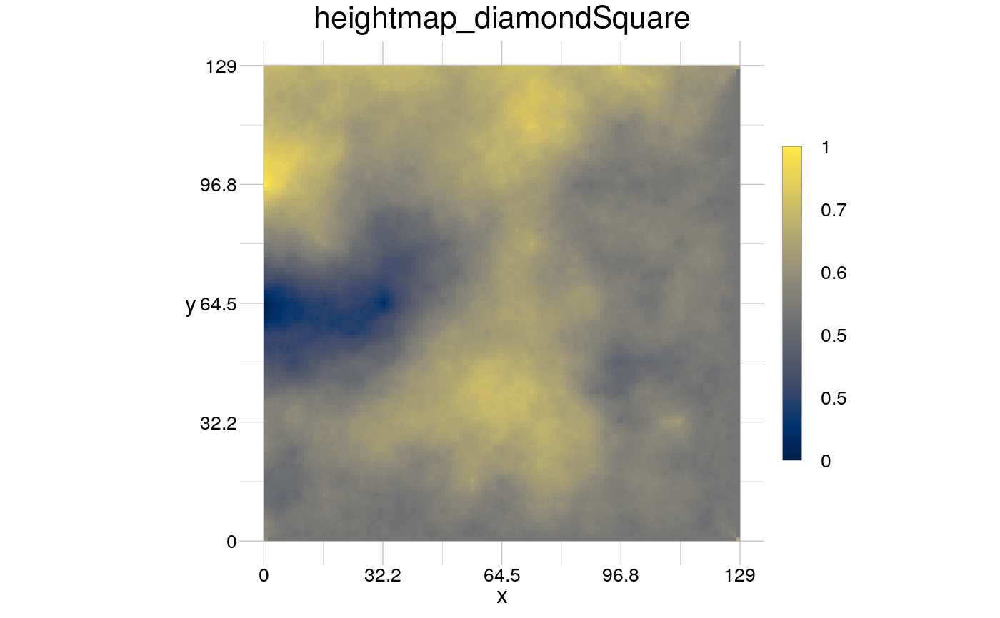

This is largely still work in progress.
spmHeightmap(mat, hurst = NULL, type = "diamondSquare", startDev = 1, seed = NULL)
| mat | [ |
|---|---|
| hurst | [ |
| type | [ |
| startDev | bla (for now) |
| seed | bla |
A heightmap is the two dimensional representation of a three dimensional surface, where the value of the cells represents the height in the three dimensional surface (a simulated digitial elevation model).
The algorithm was
originally proposed by Fournier et al. (1982), but has been enhanced since
then. It assigns values to an empty array (one or two dimensional).
"The algorithm recursively subdivides the interval and generates a
scalar value at the midpoint which is proportional to the current standard
deviation times the scale or "roughness" factor (h). [...] h is equivalent
to the Hurst exponent [see fractional brownian motion] and can take values
between 0 and 1." (Fournier et al, 1982).
The implementation here
computes values that are at the boundary of the two dimensional array as
average from its three only neighbours and not from the one dimensional
version of the algorithm (Fournier et al., 1982).
If this function is used in conjunction with generate,
mat cannot be specified, because generate assigns it.
Fournier A, Fussell D, Carpenter L. Computer rendering of stochastic models. Communications of the ACM. 1982;25:371–384
Palmer MW. The coexistence of species in fractal landscapes. The American Naturalist. 1992;139:375–397
Travis JMJ, Dytham C. A method for simulating patterns of habitat availability at static and dynamic range margins. Oikos. 2004;104:410–416
mat <- matrix(nrow = 100, ncol = 100, data = 0) myHeightmap <- spmHeightmap(mat = mat, hurst = 0.4, seed = 13531) visualise(myHeightmap)